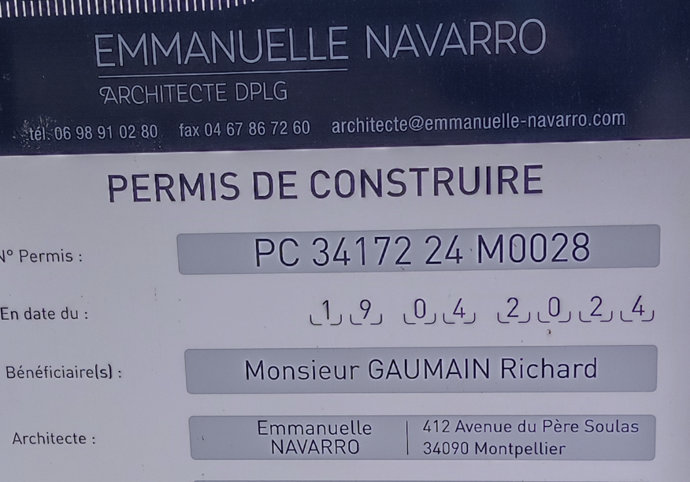
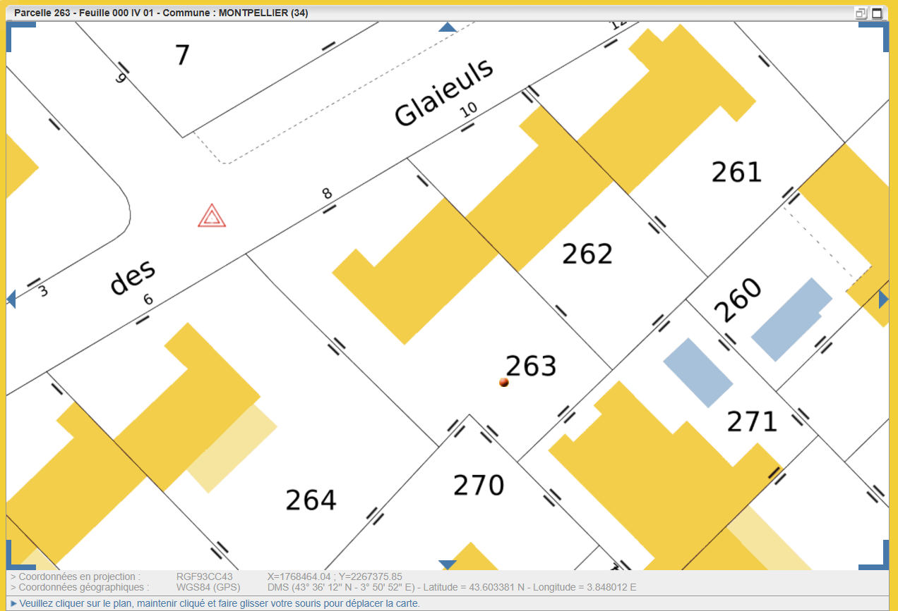
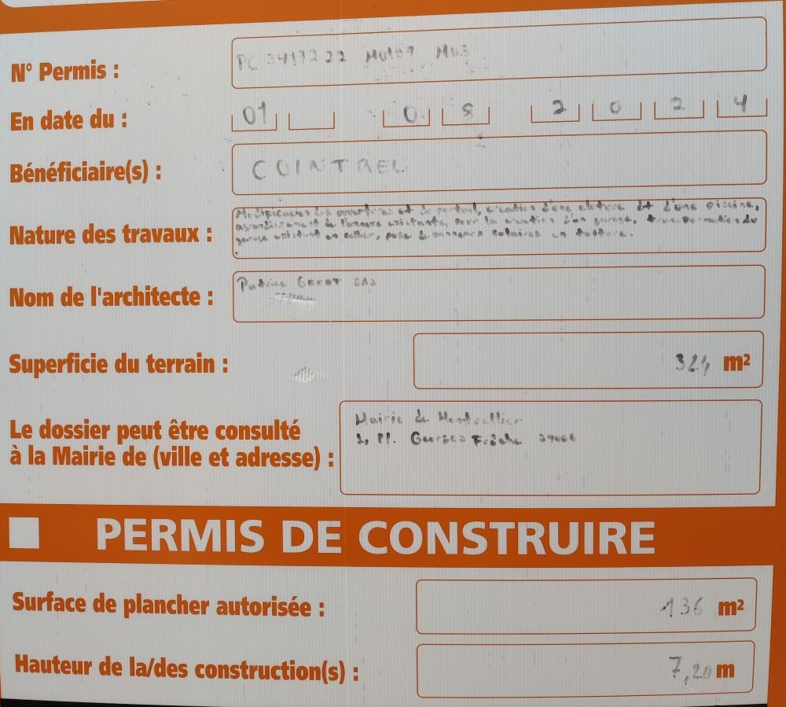

1 Parcelles
1.1 IV268, Hortensias 16, Mme Galceran
1.2 IV262, Glaieuls 10, M. Gaumain

1.3 IV263, Glaieuls 8, époux SELME
536 / 107 m2

1.4 IV264 Glaieuls 6, époux Braimis
1.5 IV265 Glaieuls 4, M. Spassaro
dimensions approchées : largeur:12.90 longueur: (37.4+33.81)/2 surface approchée: 459.3 m2
1.6 IV308 Hortensias 33, M. Cointrel

PC 34172 22 M0197 M03 du 01/08/2024 ??
- 2U2-1fw